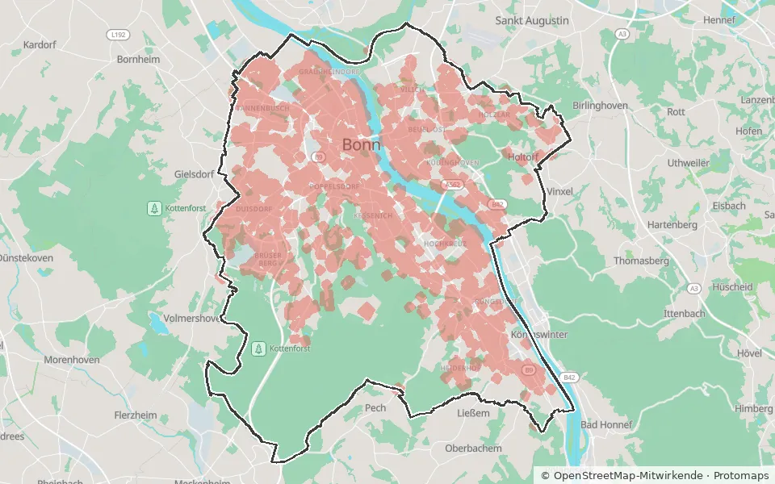
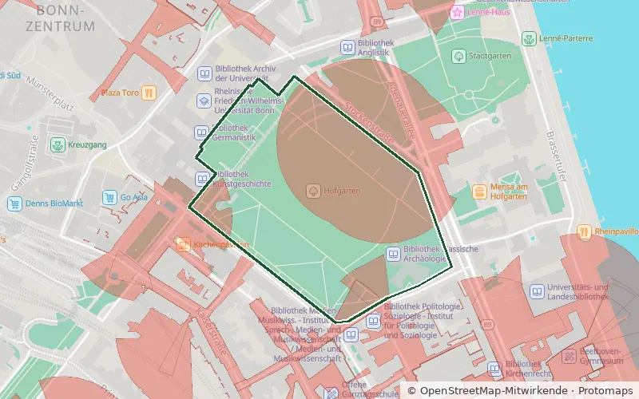
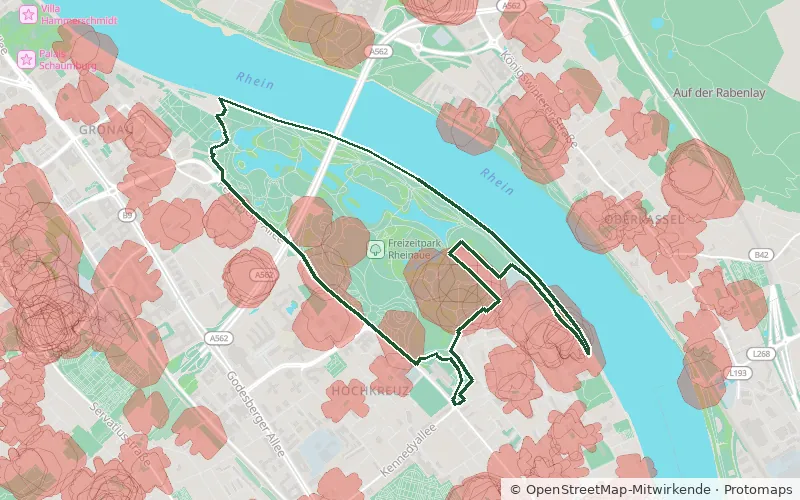
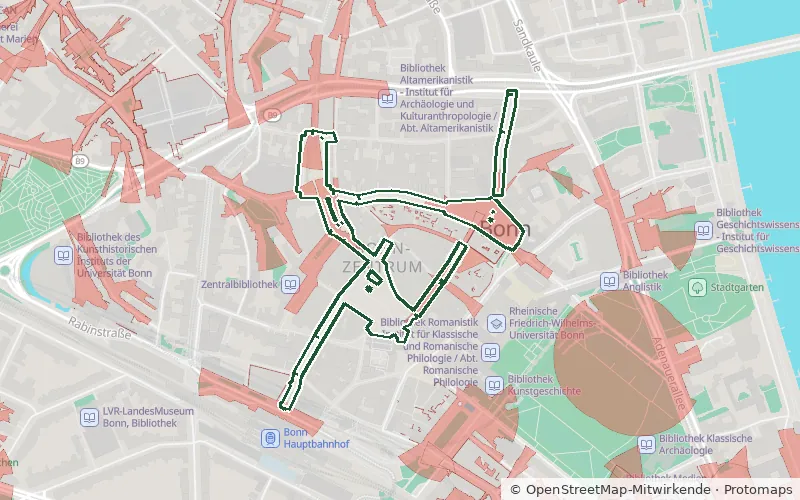
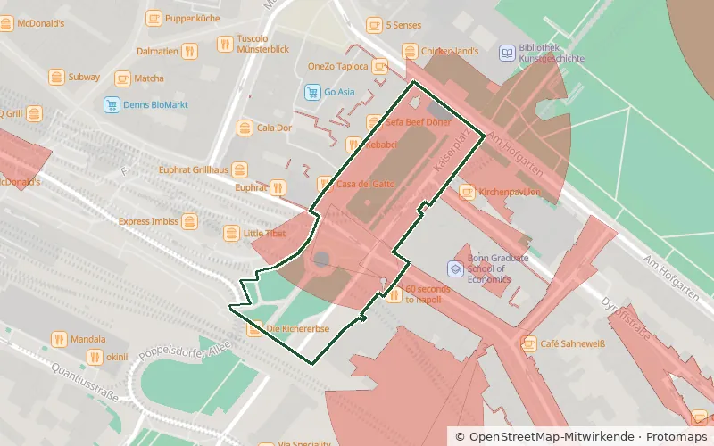
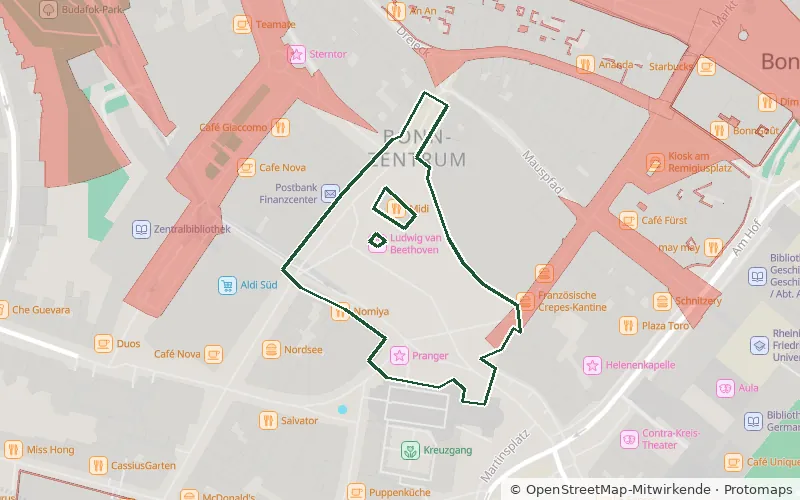
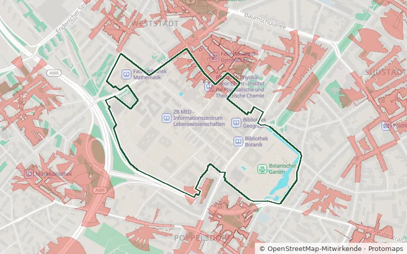

In Bonn ist öffentliches Kiffen auf 25 km² verboten, das sind 17,5 % der Stadtfläche von 141 km². Grund sind 1 699 Einrichtungen, in deren Sichtweite nach § 5 KCanG nicht konsumiert werden darf, vor allem Sportstätten und Spielplätze. Sichtweite heißt: höchstens 100 Meter vom Eingangsbereich, und nur dort, wo kein Gebäude die Sicht verdeckt. Dazu kommen die Fußgängerzonen, in denen zwischen 7 und 20 Uhr nicht konsumiert werden darf, und überall die unmittelbare Gegenwart von Kindern und Jugendlichen.
Fast ein Drittel der Stadt ist Wald, vor allem der Kottenforst (31 % der Stadtfläche), und dort liegt kaum eine Zone (5,1 %). Ohne den Wald gerechnet liegen 23,2 % der Stadt in einer Zone. Außerdem verbietet die Stadt das Kiffen auf ihren Weihnachtsmärkten und auf Pützchens Markt (siehe unten).

Woher die Zonen kommen
| Einrichtung | Anzahl | Zonenfläche |
|---|---|---|
| Schulen | 153 | 6,5 km² |
| Kitas und Kindergärten | 228 | 5,1 km² |
| Kindertagespflege | 14 | 0,2 km² |
| Spielplätze | 480 | 8,9 km² |
| Kinder- und Jugendeinrichtungen | 50 | 1,2 km² |
| Sportstätten | 774 | 11,5 km² |
Die Spalte rechts zählt jede Art für sich; weil sich Zonen verschiedener Einrichtungen überlappen, ist ihre Summe größer als die 25 km² oben. Den größten Teil machen die 774 Sportstätten aus, von Bolzplätzen über Turnhallen bis zu Fitnessstudios, gefolgt von 480 Spielplätzen.
Auf Spielplätzen verbietet die Straßenordnung der Stadt außerdem, Tabak „oder andere Produkte“ zu rauchen und Alkohol zu trinken (Straßenordnung), und auf dem ganzen Gelände der städtischen Sportstätten ist Rauchen verboten (Haus- und Nutzungsordnung). Anbauvereinigungen fehlen in der Tabelle: Wo sie anbauen, ist nicht veröffentlicht.
Hofgarten, Rheinaue und Rhein
Im Hofgarten vor dem Hauptgebäude der Universität liegen 47 % der Fläche in einer Zone, vor allem um den Spielplatz an der Stockenstraße; eine eigene Regel zu Cannabis haben wir für den Hofgarten nicht gefunden.

Im Freizeitpark Rheinaue sind es 27 %, um acht Sportanlagen, darunter das Baseballstadion, und fünf Spielplätze; auf der Beueler Seite der Rheinaue 57 %. Auf einem 100 Meter breiten Streifen Land entlang des Rheins liegen 19 % in einer Zone.

Innenstadt und Weihnachtsmarkt
Eine amtliche Liste der Bonner Fußgängerzonen haben wir nicht gefunden. Am nächsten kommt ihr das Straßenverzeichnis der Straßenreinigung, das die Fußgängerstraßen der Innenstadt in eigenen Klassen führt, darunter Markt, Sternstraße, Remigiusstraße, Poststraße und Münsterplatz (Straßenverzeichnis bonnorange); eine Fußgängerzone in Bad Godesberg nennt der Gebührentarif zur Sondernutzungssatzung (Gebührentarif). Dort gilt zwischen 7 und 20 Uhr Konsumverbot; blau zeigt die Karte die Fußgängerbereiche, wie sie in OpenStreetMap eingetragen sind.
Von den Fußgängerstraßen der Innenstadt liegen außerdem 40 % in einer Sichtweiten-Zone, der Markt ganz (100 %), der Münsterplatz kaum (2 %). Der Kaiserplatz liegt zu 77 % in einer Zone, wegen des Spielplatzes darauf.



Während des Weihnachtsmarkts 2026 ist Kiffen in der Innenstadt bis in den Abend verboten, vom 18. November bis 23. Dezember von 12 bis 22.30 Uhr, freitags und samstags bis 23.30 Uhr: auf Münsterplatz, Remigiusplatz und Remigiusstraße, Friedensplatz, Vivatsgasse, Bottlerplatz und Teilen von Post- und Sternstraße. Auf dem Nikolausmarkt in Bad Godesberg am Theaterplatz gilt es bis Mitternacht (Allgemeinverfügungen, Amtsblatt 49/2026). Auf Pützchens Markt in Beuel war es im September 2026 bis drei Uhr nachts verboten (Amtsblatt 39/2026); 2025 zählte der Ordnungsdienst dort zwölf Verstöße (Stadt Bonn, 2025).
Universität
Hochschulen sind nach § 5 KCanG keine Verbotsorte. Der Campus Poppelsdorf der Universität liegt zu 5 % in einer Zone. Eine Hausordnung mit einer Regel zu Cannabis haben wir für die Universität nicht gefunden.

Was sonst noch gilt
Ein Verstoß gegen § 5 Abs. 2 kostet in Nordrhein-Westfalen 50 bis 500 Euro, in Gegenwart von Minderjährigen 300 bis 1.000 Euro (Land NRW); zuständig ist die Stadt. Für Volksfeste und ähnliche Großveranstaltungen sind die Veranstalter nach einem Erlass des Landes verpflichtet, Verstöße zu verhindern, notfalls mit einem generellen Konsumverbot (Erlass des Gesundheitsministeriums, Mai 2024). Dauerhafte eigene Verbotszonen für Cannabis hat Bonn nicht, nur die zeitlich begrenzten auf Märkten (Stand 27. November 2026).
Häufige Fragen
Wo darf man in Bonn kiffen?
Außerhalb der roten Flächen, außerhalb der Fußgängerzonen zwischen 7 und 20 Uhr, nicht auf den Märkten, für die die Stadt es verboten hat, nicht in Gegenwart von Kindern und Jugendlichen und nicht dort, wo ein Hausrecht es verbietet. Eine weiße Fläche auf der Karte heißt nicht, dass Konsum dort erlaubt ist: Die Karte kennt weder Hecken noch Bäume, die die Sicht nehmen, noch Einrichtungen, die in OpenStreetMap fehlen.
Darf man auf dem Weihnachtsmarkt kiffen?
Nein. Tagsüber liegt er in der Fußgängerzone, und die Stadt hat das Kiffen dort während der Öffnungszeiten bis in den späten Abend verboten.
Wie genau ist das?
Die Zonen sind aus OpenStreetMap berechnet, mit Gebäuden als Sichthindernis, und werden täglich neu gerechnet; die Zahlen auf dieser Seite sind vom 27. November 2026. Die Karte ist eine Orientierungshilfe, keine Rechtsauskunft. Wie gerechnet wird und wo die Grenzen liegen, steht auf der Über-Seite.
Fehlt eine Einrichtung oder ist eine falsch eingetragen? Korrekturen in OpenStreetMap erscheinen am Tag darauf auf der Karte; nur eintragen, was es vor Ort wirklich gibt.